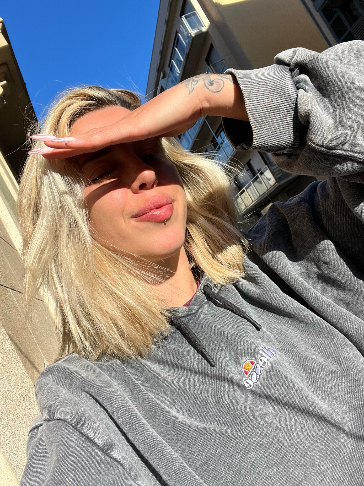

Sofía Ruiz de Temiño Calabrese

Acerca de mi
Soy una persona apasionada por el diseño y la tecnología. Actualmente me encuentro en la capacitación y busqueda de nuevos objetivos dentro del sector para poder desarrollar mis habilidades de diseño y arquitectura.
Educación
- Bachillerato en Ciencias Economicas (2014)- Colegio Cristo Rey - Rosario, Argentina
- Arquitectura planeamiento y diseño (Inconcluso) - Universidad Nacional de Rosario
Experiencia Laboral
- Recepcionista 2014-2018
- Bartender y encargada de barra 2019-2023
- Barista 2023-Presente
Habilidades
- AutoCAD
- Adobe Ilustrator - Adobe Photoshop
- Diseño 3D
- Pack office
- Habilidades organizativas
Otros
Contacto Aficiones